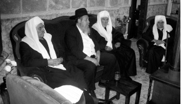
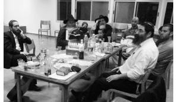
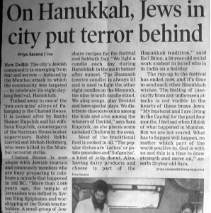
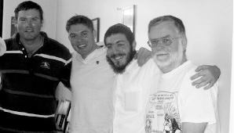

Eight Candles That Lit Up Eight Neshamos
Everybody knows that wherever there are Jews, there is Chabad. The presence of Chabad is especially noticeable Chanuka time, when public ceremonies are held with local politicians and media in attendance. What not everybody knows about are the efforts of the Rebbe’s foot soldiers who reach out to individual Jews in the most out-of-the-way places, whether in a Druze village or deep in a Tasmanian forest.
A NESHAMA HIDDEN IN A DRUZE VILLAGE

On Chanuka, Anash in Haifa and Krayot go on mivtzaim and bring the light of Chanuka even to out-of-the-way places. We went to an area known as “Alcohol Valley,” since many young people go there to drink and carouse.
Two years ago on Chanuka, shortly after we published the Tanya in the Druze village of Beit Jann, we went to a building that was lit up on the side of the road, between Kfar Aza and Kiryat Ata. At first we thought it was another Jewish hangout and that we would bring them some Chanuka spirit. It was only when we walked in that we realized that this was a Druze bar.
We did not retreat; rather, we decided to tell them about the Seven Noachide Laws. When they caught sight of us, they began singing, “Moshiach, Moshiach …” It was amazing to see the Rebbe’s words come true before our eyes; the world is ready for Moshiach. We gave out Sheva Mitzvos cards and left.
On the way out, a short Arab young man came over to me and quietly said, “You should know that I’m Jewish. I was born in Beit Jann. My father is Druze but my mother is Jewish.”
I was very excited by the hashgacha pratis, that this took place shortly after we printed the Tanya in the Druze village. I was glad we hadn’t just turned around when we saw that it was an Arab bar. I suggested that we go back in and light the Menorah, but he said he was afraid of his Arab friends. He didn’t want them to know that he’s Jewish. I didn’t want to lose out on the mitzva of lighting the Menorah with a lost Jewish soul, so we went to a private corner and he lit the Menorah there, as well as his neshama.
THE CANDLES WOKE HIM FROM HIS COMA

In the days leading up to Chanuka, R’ Yaakov Ben Ari and R’ Dovber Chaviv of “U’faratzta Kibbutzim” are very busy. Their Chabad house reaches out to kibbutzim scattered across the country. On ordinary days, they send couples every night to make house calls, mostly to birthday parties that are arranged for mekuravim who live on kibbutzim. These parties turn into farbrengens with good hachlatos.
“Last year,” said R’ Chaviv, “we decided to enlist all of Anash in Tzfas so we could send several couples (married couples or a pair of men) every day of Chanuka to every kibbutz. This way, in every kibbutz there would be a few Chanuka parties taking place simultaneously every night. Each couple or pair was given a Menorah, candles, doughnuts and a list of the people in the kibbutz to visit.”
One evening, three couples went to Kibbutz Neot Mordechai. They had gone to the Nadar family at the address we had provided but nobody was home. A boy passing by on a bicycle turned out to be a relative. He said the family was at the grandparents’ house not far away. This is a family that made aliya from Argentina. They had been warm to Judaism, but life on the kibbutz and the education they received had slowly distanced them from Judaism.
When they arrived at the grandparents’ house, they entered singing but the family was downcast and did not get swept up in their joyous mood. It turned out they were in the midst of a tragedy. Their son had been riding his motorcycle a few kilometers away from their kibbutz and had been in an accident. He had been thrown off and sustained a head injury and was in a coma. The doctors could not say what his prognosis would be.
The Lubavitchers told the family that Chanuka is an auspicious time for miracles, and simcha and lighting the Menorah would, G-d willing, be the catalyst for their son’s recovery. The family all stood for the Menorah lighting and said amen very emotionally, especially for the bracha “who did miracles for our ancestors in those days and this time.” They hoped that they too would experience a miracle. At the farbrengen that followed, Mendy referred to the aphorism, “think good and it will be good,” and about “simcha canceling and sweetening judgment.” He said he hoped they would call him with good news very soon.
A few days after Chanuka, R’ Yaakov Ben Ari asked me who had been to the Nadar family at Kibbutz Neot Mordechai. “The entire kibbutz is talking about them, about the ‘Angels from Chabad.’”
It turned out that the day after the Lubavitchers had made the Chanuka party with them, the boy had opened his eyes for the first time and when he saw his mother he recognized her and said, “Ima,” and gave her a kiss.
I called the family and suggested that they make a Seudas Hodaa, but their son was still in the hospital. Although his life was no longer in danger, his condition still wasn’t good and it would take him a long time to recover. We decided to go to the house and check the mezuzos and write to the Rebbe together.
R’ Chaviv concluded the story, “When we were there most recently, the son had already returned home and he’s fine, thank G-d. He attributes his recovery to the lighting of the Chanuka Menorah and the Chanuka party we had in his home.”
THE MAYOR IN PAJAMAS LIGHTS THE MENORAH

One year we decided to light a public Menorah in White Plains. I submitted a request for a permit and we got permission from the mayor, Mr. Delfino. We set up the Menorah in the center of town, next to Main Street. I invited the mayor, a gentile, to light the Shamash on the electric Menorah.
The mayor came to the lighting ceremony with a delegation of his deputy mayor, police officials and others. He asked me how many public Menorahs I had set up in the area and I told him we have eighteen Menorahs. He wondered how I could light all eighteen in one night. I told him it’s really hard and it takes two hours every night.
“I travel by car and go to each location. I get out, hit the switch, get back into the car, and travel to the next place. In a few places we have friends who light it for us, but I mostly light them all myself,” I said.
He turned to Mr. Arne Abramowitz, Deputy Commissioner of Parks and Recreation in White Plains, and asked him to help me out. Arne asked how he could be of help and the mayor told him that every night, he should come to this Menorah and press the switch, and that would spare me twenty-five minutes. I was very happy and thanked the mayor.
On Zos Chanuka, I thought, “Today is the last day. What can I do that would be extra, as the Rebbe said to do?” I thought it would be great if I could light a new Menorah in a place where it had not been lit before. I tried to think of a good location and wondered how I could get a permit to light a Menorah there in just a day. It seemed unrealistic.
I called the mayor and spoke to the secretary and asked to be transferred to him immediately about an important matter. When the mayor came on the line, I explained that I needed a favor from him. He said, “Sure rabbi, what would you like?”
I told him, “I’d like to come to city hall. I’ll bring a Menorah and we’ll light it. You will speak and give a holiday message and that way, we’ll celebrate the miracle of Chanuka with the municipal workers.” The mayor liked the idea and promised to invite all city workers to attend the Menorah lighting in city hall during lunch hour.
About a hundred people, maybe more, attended the event. The mayor was asked to light the shamash, the Menorah was lit, and then it was the mayor’s turn to speak. He addressed Arne Abramowitz, saying, “Arne, I’m about to speak and it’s important to me that you hear what I have to say.” I looked at Arne and saw he looked a bit uncomfortable since the mayor looked serious.
Delfino began with a story. “Saturday night, I looked out my window which faces the Menorah on Main Street. I noticed that that day’s light was not lit. I counted the lights and one was missing. It was a snowy, cold night. I woke up my wife and said to her, ‘I’m going outside for a few minutes and will be right back; don’t worry.’”
It was late at night and the mayor was already in his pajamas and slippers. He put on his warm coat over his night clothes and crossed the street, heading for the Menorah. He started fumbling around with the switches in order to find the switch that would light that night’s light. Suddenly, he heard a voice behind him shouting “Don’t move! You’re under arrest!”
He turned around and saw two policemen. They asked him why he was playing around with the switches on the Menorah. He told them he was the mayor but they didn’t believe him. A man in pajamas wearing slippers out on a freezing night, playing with switches – he didn’t look like a mayor, but more like someone trying to vandalize the Menorah. After some discussion they realized he really was the mayor. They were very curious about why he was up and about at one in the morning.
The mayor told them, “I promised the rabbi that every night we would light the Menorah. If you make a promise you have to keep your word. So that’s why I’m here tonight, lighting the Menorah.”
I heard this story from the mayor and thought: He’s not even Jewish, but he got the point. If the Rebbe has a Menorah in White Plains, New York, and it’s cold outside and it’s one in the morning and you are wearing pajamas and slippers, so what? You’re a soldier! Go light the Menorah!
THE LIGHTS THAT SAVED A LIFE 
R’ Eliezer Wilschansky, rosh yeshiva of Chanoch L’Naar Chabad in Tzfas, relates:
On Yud-Tes Kislev I attended a farbrengen at Yishuv Tzofim. Many of the people from the yishuv were in attendance including the rav of the yishuv. One of the people, by the name of Chagai, began telling a story about his meeting the Rebbe’s shluchim in many locations. He lived in Australia for a long time when he worked for the Jewish Agency and he decided to do as Chabad does and open his home to Jewish tourists and visitors and invite them for Shabbos and holiday meals.
“During a Shabbos meal, I would ask the guests to say something about themselves. One of the guests told an amazing story that happened to him. He had grown up in a Jewish family in America that did not practice anything Jewish. He had a very difficult childhood. His parents divorced and he was sent to live in a boarding school. Over the years he became completely estranged from anything Jewish. Even when he finally married, history repeated itself and he too divorced after a very miserable marriage.
“My situation broke me completely,” he said. “I was all alone. Nobody in the world cared whether I lived or not. At a certain point I decided to end my life. I decided that I would first go and buy a bottle of some strong alcoholic beverage so I could enjoy it before I died, and so that it would be easier to carry through on my decision.
“When I arrived at the mall, I saw Chabad Chassidim dancing around a big Menorah. That scene brought me back to some nice memories of my childhood. Chanuka, the Menorah and the lights were the only Jewish things I grew up with and of course, I remembered them well.
“I went over to the Chassidim and got to talking to them. They were very friendly and without their realizing it, they saved my life. I asked them where the nearest synagogue is and I began to regularly attend services. Today, I am very happy with life. It is all thanks to those Chabad Chassidim who lit the Menorah as well as my neshama, moments before I was ready to extinguish it myself.”
FROM TZFAS TO EILAT
Shlucha, Mrs. Chana Lifsh of Tzfas, relates:
A few years ago, I took a psycho-drama course. There were women from varied backgrounds, from ultra-Orthodox to religious, national-religious, and not religious. Despite our differences, there was a good rapport among us.
Shortly before Chanuka, I went over to one of the irreligious women because I thought I might have hurt her feelings and I wanted to apologize. At the same time, I invited her to visit my home and take part in the Menorah lighting.
Every night of Chanuka we have guests and we do something special with the children and the guests. The woman came with her two daughters and was very moved and impressed. Since that time, we invited her every Chanuka.
My mother passed away three years ago and I got up from Shiva shortly before Chanuka. I didn’t have the energy to arrange parties and events and I forgot to invite that woman.
To my surprise, she called me on one of the days of Chanuka and said, “Hello Chana, how are you? You Lubavitchers are amazing. You don’t forget about me …”
I thought she began in this way to hint that she was expecting an invitation or that she was going to chide me for forgetting her. I began apologizing and explaining that I had just gotten up from Shiva and that I was so sorry I had forgotten about her but she wasn’t listening to my apology. She just repeated, “You sent me shluchim – kol ha’kavod to you!”
Shluchim? I did not recall sending anyone to her. Then she said, “I moved to Eilat and the truth is that I completely forgot that it’s Chanuka. Last night I went shopping and I suddenly saw this huge Menorah and a Chabad party taking place.I went over and saw a young man standing in the middle and running the show. I asked where he was from and he said, ‘From Chabad.’ No, I mean where are you from in Eretz Yisroel? He said, ‘Tzfas.’
“I was so excited and I asked him whether he knows Chana Lifsh. He smiled and said, ‘Of course I know her. I’m Levi Lifsh. She’s my mother.’ So I wanted to thank you for sending your son to me all the way down in Eilat to remind me that it’s Chanuka.”
THE DISAPPOINTING ARTICLE THAT LIT UP A NESHAMA
“During the days following the horrific attack in Bombay,” said R’ Shneur Kupchik, shliach in New Delhi, “we were besieged by journalists who wanted to interview us about our work.
“One Friday, a journalist from the Times of India came. She asked us questions and wanted to hear special stories so she could leave the Chabad house with a sensational news item. I told her that if she wanted a scoop, she should come the following Sunday, the first night of Chanuka, and take pictures. She loved the idea and asked to be the only invited reporter so her article would be exclusive. We told her we wouldn’t invite other journalists.
“At the Chabad house, there were some who thought this wasn’t a good idea. They said journalists only write what they want, not what they’re asked to write. It was very possible that instead of a Kiddush Hashem, it would turn into a Chillul Hashem.
“And anyway, who cares if several million Indians hear about Chanuka?” asked one of the bachurim who was there helping out on shlichus. I disagreed with him since I knew that the Rebbe is in favor of publicity, especially for Chanuka.
“The journalist showed up and was impressed by our work, but she wrote what she wanted and unfortunately, did not stick to the messages that we wanted to convey. I was actually quite disappointed and frustrated.
“On the day the article came out, a well-dressed Indian Jew showed up. He was a local businessman. ‘I had been searching for a place where I could light the Menorah,’ he said excitedly, ‘until I read an article about the Chabad house today in the Times, with a picture of your Menorah lighting.’
“In an instant, all my annoyance melted away. It was worth all the effort just for this one Jew.”
LIGHTS AT THE END OF THE WORLD
“I will never forget Rosh Chodesh Teves, the sixth night of Chanuka 5767,” said R’ Aryeh Leib Kaplan, a teacher in Chanoch L’Naar in Tzfas.
“I was on shlichus with my friend, R’ Shneur Shachar in Launceston, Australia. R’ YY Gordon, who lives in Melbourne, runs the Chabad house in Launceston. During our time on shlichus we met two Jewish brothers whose mother had married a Mormon. They were raised as Mormons.
“On a visit to Berlin, one of the brothers walked into a Chabad house and loved it. He and his brother, who did not relate to the Mormon religion whatsoever, decided to leave it and develop their connection to Judaism. That Chanuka the brothers invited us to their home to run a Chanuka party. They lived on a farm in the Tasmanian Mountains, which is located on an island between Australia and Antarctica.
“We were given precise directions. ‘Drive on the highway until you get to village X, leave the highway and drive seven kilometers, then make a left, drive another three kilometers and our house is on the left.’
“What happened was, after we made the turn we noticed that we had driven twelve kilometers already and there was no turnoff. We figured we had made a mistake and decided to go back and look for the turnoff.
“We were terrified since we were driving in an immense forest in utter darkness, as it was Rosh Chodesh and there was no moon. We had no cell phone service since we were far from civilization. If that wasn’t enough, we saw that we were low on gas.
“It took time to get to a place where there was phone reception. We called the man and in the phone conversation, which kept breaking up, making it difficult to understand one another, we explained where we were. Ten minutes later he came and met us with his jeep.
“We lit the Menorah ourselves in his home. To our surprise, when we had finished, the brothers began singing ‘HaNeiros Halalu’ with the Chabad tune, even though they had recently known next to nothing about Judaism. This was because they had been at the Chabad house in Berlin the previous year and this is the only song in Hebrew that they learned.
“The next morning we suggested that they put on t’fillin. One of the brothers, who had refused at first, finally agreed on condition that we say the entire Shma with him in Lashon Ha’kodesh and not in English! Of course we agreed and I read it to him, word by word. It took more than half an hour at the end of which he was drenched in sweat and tears.
“He hugged us and thanked us for coming and lighting up his neshama.”
Beis Moshiach (staff). "Eight Candles That Lit Up Eight Neshamos." Beis Moshiach, no. 904 (November 26, 2013).